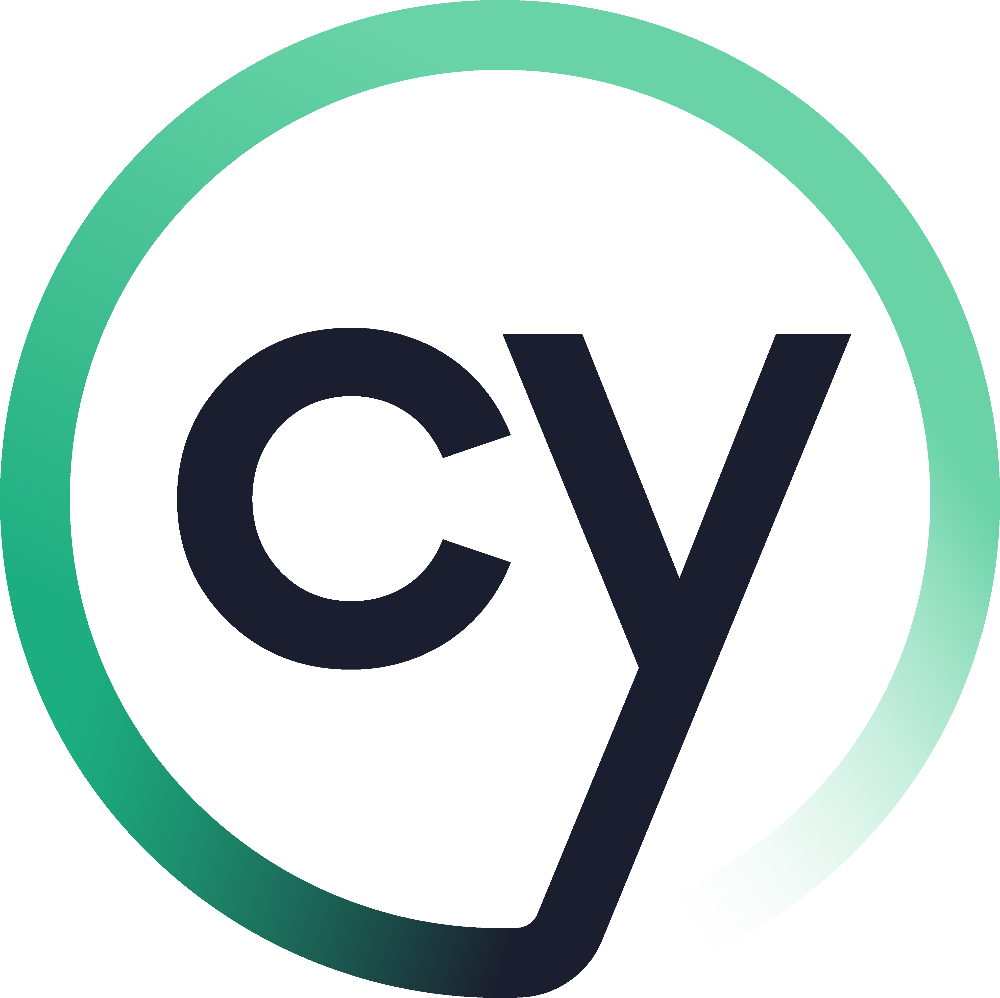

Automation Testing Lab
Selenium · Playwright · Cypress — Hands-on Practice & Skill Development
A self-directed automation engineering lab covering three major test automation frameworks. Built to translate manual QA expertise into practical automation skills with real scripts, real execution evidence, and real reports.
Why I Built This
Manual testing is the foundation — but the industry demands automation fluency. I built this practice lab to bridge that gap: to move from knowing what to test to knowing how to automate it reliably, across the three frameworks most commonly required in QA job descriptions today.
Each section of this lab represents real practice: actual scripts run against live web applications, configuration files, test reports generated by the frameworks, and documented learnings. This is not coursework — it is working code.
Selenium WebDriver + Java
What I Practised
- Setting up a Maven project with Selenium and TestNG dependencies
- Writing Page Object Model (POM) classes to separate test logic from page interactions
- Implementing explicit and implicit waits to handle dynamic elements
- Handling dropdowns, alerts, iframes, file uploads, and multi-window scenarios
- Parameterising tests with TestNG
@DataProviderfor data-driven execution - Generating HTML test reports via TestNG listeners
- Running tests in headless mode for CI compatibility
Sample Test Targets
- Login and authentication flows (positive + negative)
- Form validation and submission
- Table data verification and pagination
- Cross-browser compatibility checks
- End-to-end user journey scripting

CypressWhat I Practised
- Installing and configuring Cypress in a Node.js project
- Writing
cy.visit(),cy.get(),cy.contains()selectors - Structuring tests with
describe/itblocks and Mocha syntax - Using Cypress fixtures for test data management
- Intercepting and stubbing network requests with
cy.intercept() - Custom Cypress commands in
commands.js - Running the Cypress Test Runner and headless CLI mode
Key Learnings
- Cypress's automatic retry mechanism reduces flakiness
- Real-time browser execution enables faster feedback loops
- Best suited for frontend-heavy SPAs and React apps
- Trade-off: limited multi-tab and multi-domain support vs Playwright
Playwright
What I Practised
- Installing Playwright and scaffolding a test project with
npm init playwright - Writing tests using
test()andexpect()from@playwright/test - Using locators:
page.getByRole(),getByText(),getByTestId() - Running tests in parallel across Chromium, Firefox, and WebKit
- Generating HTML reports and traces with
--reporter=html - Recording tests using Playwright's codegen tool
- Handling authentication state reuse with
storageState
Key Learnings
- Auto-waiting on all actions reduces the need for manual waits
- Cross-browser coverage from a single codebase is a strong differentiator
- Trace viewer is invaluable for debugging CI failures
- Best for complex, cross-browser automation requirements
Framework Comparison
| Criterion | Selenium | Cypress | Playwright |
|---|---|---|---|
| Language | Java / Python / C# | JavaScript / TypeScript | JS / TS / Python / Java |
| Cross-browser | Yes | Limited | Yes (native) |
| Setup complexity | Medium–High | Low | Low–Medium |
| Speed | Medium | Fast | Fast |
| API Testing | No | Yes (cy.request) | Yes (APIRequestContext) |
| Best for | Enterprise / legacy stacks | Frontend / SPA testing | Modern full-stack apps |